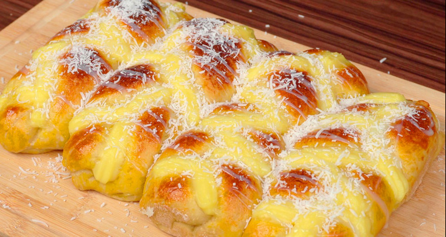
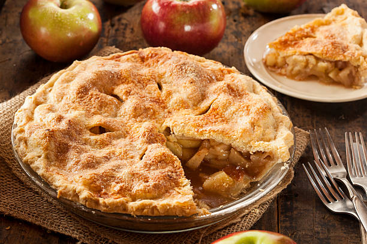

Na Panaro Artezanno, cada pão é fruto de um processo cuidadoso que respeita o tempo, os ingredientes e a tradição da panificação artesanal. Não usamos atalhos — acreditamos que o sabor verdadeiro nasce da paciência e do carinho em cada etapa.
O processo começa com a seleção rigorosa das farinhas, muitas delas orgânicas e moídas em moinhos locais. A água pura e o fermento natural — nosso levain cultivado com dedicação — são misturados lentamente, dando origem a uma massa viva e cheia de personalidade.
Após a mistura, a massa passa por um período de fermentação longa e natural. Esse tempo é essencial para desenvolver sabor, textura e digestibilidade. Nada de pressa: deixamos que o pão cresça no seu ritmo, como manda a tradição.
Em seguida, os pães são moldados à mão, com técnicas que respeitam cada tipo de receita. Alguns ganham coberturas de sementes, outros são recheados com ingredientes frescos e sazonais. Cada fornada é única.
Por fim, os pães são assados em forno de lastro, que garante crocância por fora e maciez por dentro. O aroma que invade a padaria é o sinal de que mais uma leva está pronta para encantar nossos clientes.
Esse é o nosso jeito de fazer pão: com respeito à natureza, à cultura e ao paladar. Um processo que transforma ingredientes simples em momentos especiais.
| # | Produto | Descrição | Preço R$ | Imagem |
|---|---|---|---|---|
| 1 | Pão Italiano | Pão rústico de fermentação natural | 12,00 | |
| 2 | Baguete Artesanal | Crocante por fora e macia por dentro | 8,50 | |
| 3 | Focaccia de Alecrim | Massa macia com azeite e ervas frescas | 15,00 | |
| 4 | Croissant | Folhado leve e amanteigado | 7,00 | |
| 5 | Pastel de Nata | Doce português com creme aveludado | 6,50 | |
| 6 | Pão de Centeio | Feito com farinha integral e grãos | 10,00 | |
| 7 | Rosca Doce | Recheada com creme e coberta com açúcar | 9,00 |  |
| 8 | Bolo de Cenoura | Coberto com ganache de chocolate | 18,00 | |
| 9 | Torta de Maçã | Massa amanteigada com maçãs frescas | 20,00 |  |
| 10 | Pão Australiano | Macio, levemente adocicado e com mel | 14,00 |